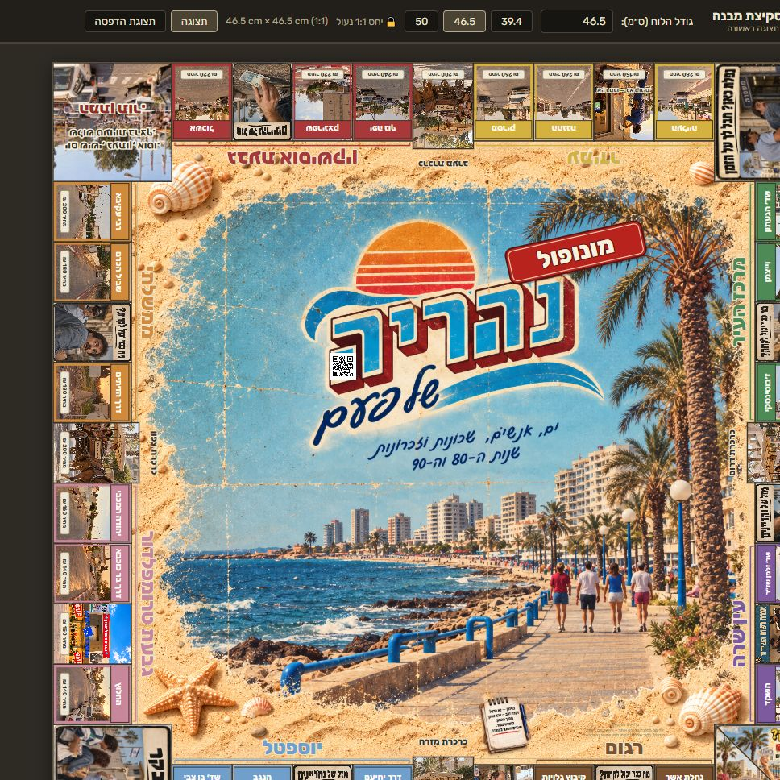
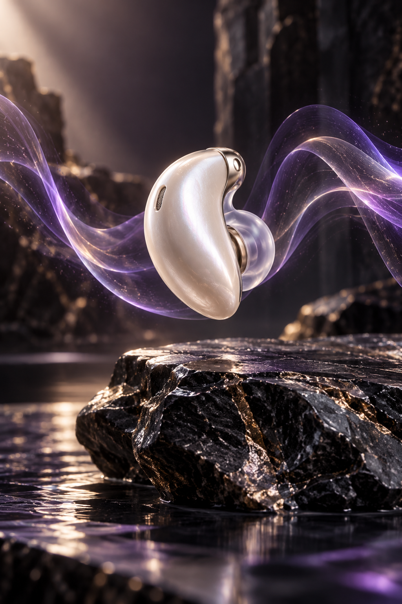
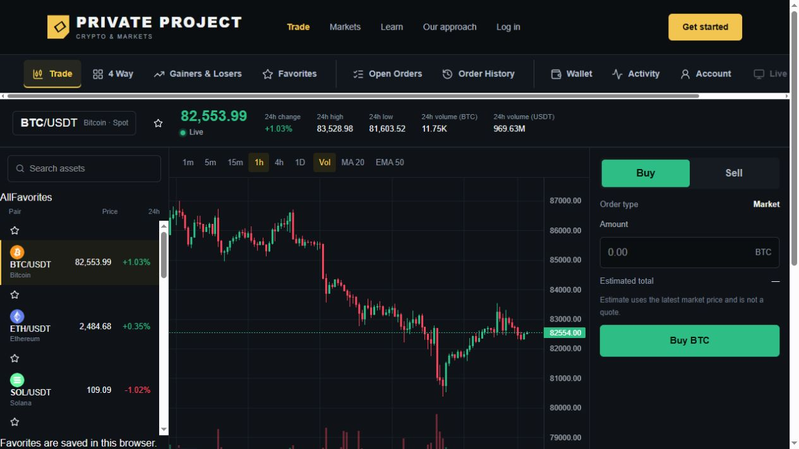

אפיון ועיצוב
מגדירים מה המוצר צריך לעשות, ומתרגמים את הרעיון למבנה ברור ולשפה חזותית עם אופי.

אתרים עם אופי. תוכנות שעושות סדר. מוצרים שמחברים עיצוב וטכנולוגיה.
 ONE SCREEN.
ONE SCREEN.חומרה, תוכנה ואפליקציה נפגשות בחוויית מוצר אחת. מהטכנולוגיה שבתוך המכשיר ועד השליטה שביד המשתמש.
לגלות את הפרויקט ↗
תהליך שלם שמחבר בין עיצוב, טכנולוגיה ואנשים.
מגדירים מה המוצר צריך לעשות, ומתרגמים את הרעיון למבנה ברור ולשפה חזותית עם אופי.

בונים את הממשק ואת המערכת שמאחוריו, ומחברים תוכן, נתונים וכלים לחוויה שימושית אחת.

נותנים למוצר חיים עם תנועה, תלת־ממד ואינטראקציות שממחישות את הרעיון ומזמינות לגלות עוד.
גם אם יש לכם רק התחלה של רעיון.